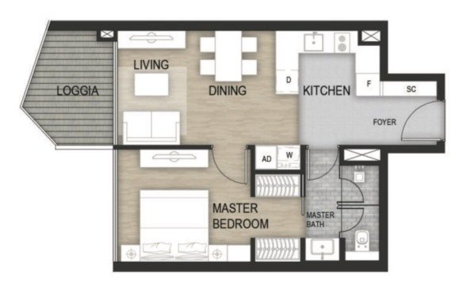
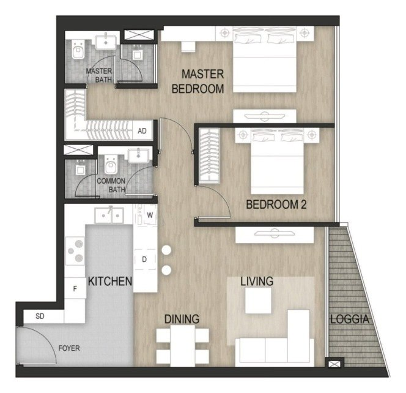
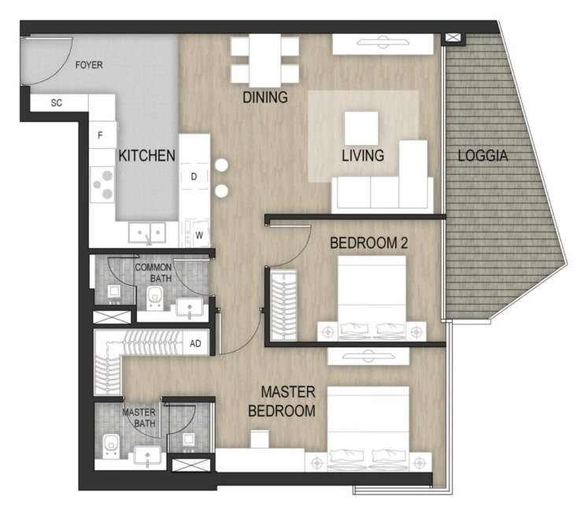
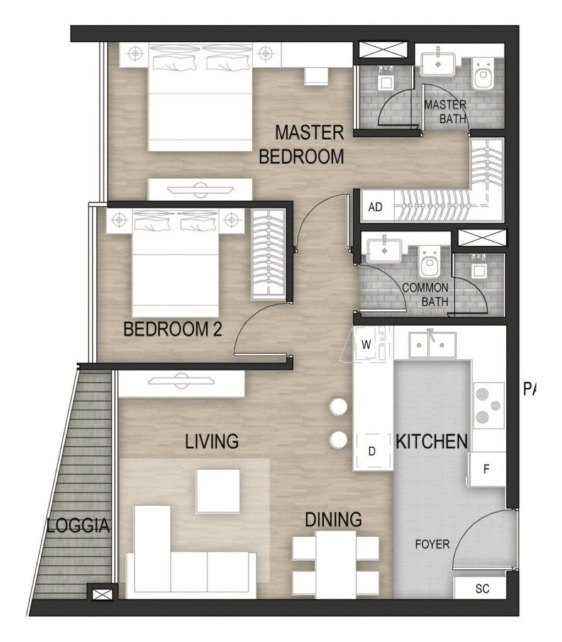
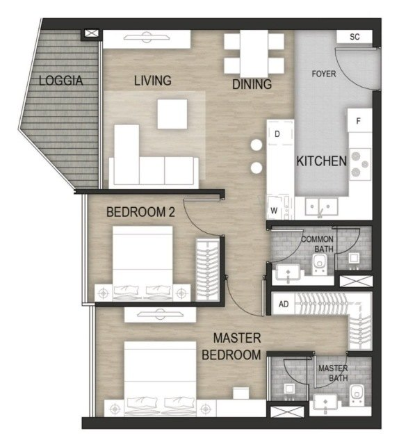
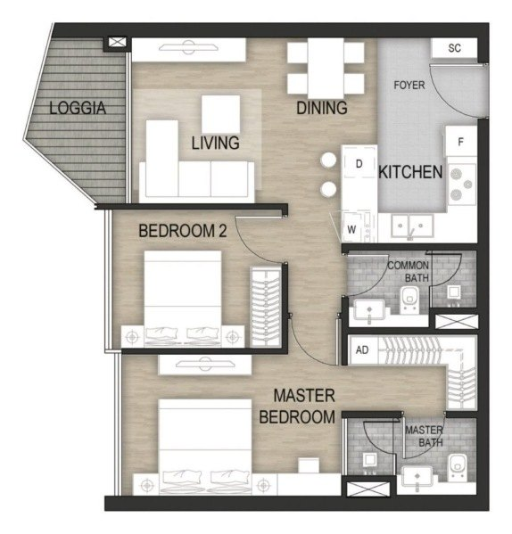
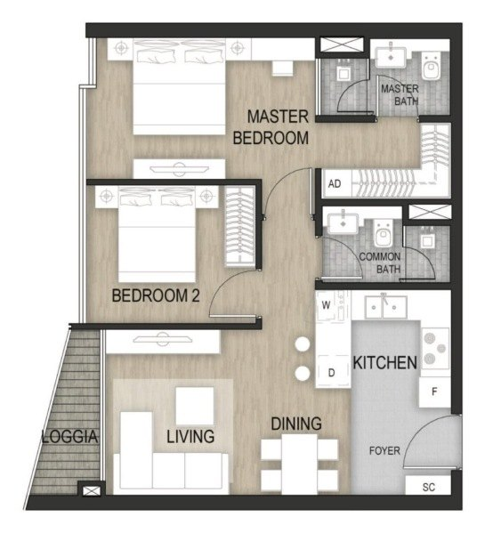
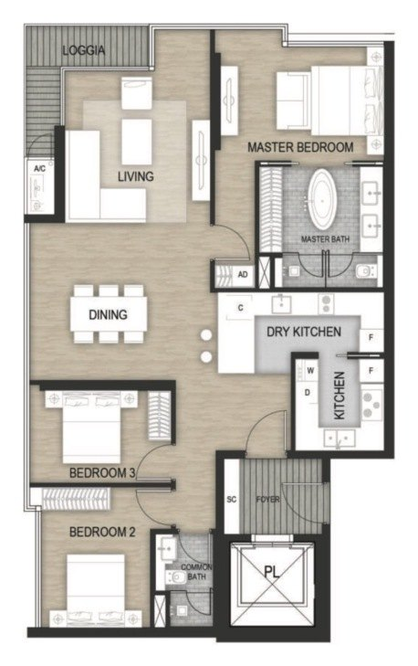
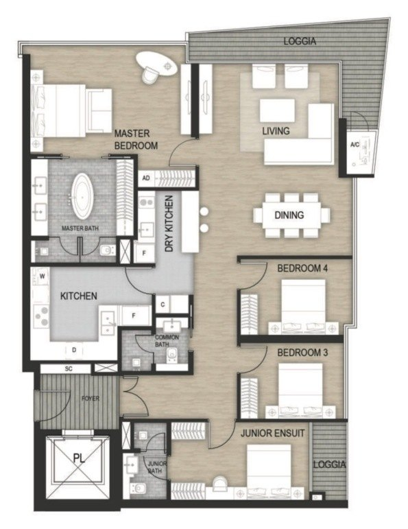

The Metropole Thủ Thiêm (Sơn Kim Land): thông tin dự án và 24 mặt bằng căn hộ
1. Tóm tắt nhanh
Thủ Thiêm
đã thu thập
khác nhau rõ rệt
The Metropole Thủ Thiêm của Sơn Kim Land là khu căn hộ hạng sang ở bán đảo Thủ Thiêm, gồm nhiều phân khu như The Opera và The OpusK. Bài này tổng hợp 24 mặt bằng căn hộ đã thu thập kèm giá tham khảo.
| Hạng mục | Thông tin |
|---|---|
| Tên dự án | The Metropole Thủ Thiêm |
| Chủ đầu tư | Sơn Kim Land |
| Địa chỉ | Bán đảo Thủ Thiêm, TP. Thủ Đức, TP. Hồ Chí Minh |
| Phân khu | The Opera (đợt 3) và The OpusK (đợt cuối, 150 căn) |
| Giá tham khảo | Mức chung của dự án khoảng 280–320 triệu/m² (11/2025) |
| Giá bán chính thức | Chưa có bảng giá chính thức trong bài; xem mục 5 |
2. Vị trí
Dự án nằm tại Thủ Thiêm, TP. Thủ Đức. Bài chỉ nêu thông tin công bố, không đánh giá vị trí.
3. Sản phẩm
Bảng dưới đây liệt kê toàn bộ mặt bằng đã thu thập; những mẫu có diện tích gần như trùng nhau được ghi chú “cùng mặt bằng”, và phần hình chỉ đặt các mặt bằng khác nhau. Diện tích có thể khác nhau tùy nguồn (tim tường hay thông thủy); cột trống nghĩa là tài liệu không công bố.
| Loại / mã | Số PN | Tim tường (m²) | Thông thủy (m²) | Ghi chú |
|---|---|---|---|---|
| 1B-1-12A | 1 | 54,9 | 51,0 | |
| 1B-1-12A | 1 | 54,9 | 50,4 | Cùng mặt bằng với 1B-1-12A |
| 2B-5m-12A | 2 | 77,4 | 72,9 | |
| 2B-1-12A | 2 | 83,7 | 78,0 | |
| 2B-1m-12A | 2 | 94,6 | 88,5 | |
| 2B-2-08 | 2 | 75,1 | 69,7 | |
| 2B-2m-02 | 2 | 77,0 | 71,9 | Cùng mặt bằng với 2B-5m-12A |
| 2B-3-A11 | 2 | 69,3 | 64,4 | |
| 2B-3m-09 | 2 | 70,6 | 65,7 | |
| 2B-3-B12 | 2 | 69,1 | 64,2 | Cùng mặt bằng với 2B-3-A11 |
| 2B-3A-05 | 2 | 71,0 | 66,0 | Cùng mặt bằng với 2B-3m-09 |
| 2B-5-12A | 2 | 77,7 | 73,2 | Cùng mặt bằng với 2B-5m-12A |
| 2B-2m-02 | 2 | 77,0 | 72,0 | Cùng mặt bằng với 2B-5m-12A |
| 2B-1-12A | 2 | 83,7 | 78,1 | Cùng mặt bằng với 2B-1-12A |
| 2B-1m-12A | 2 | 94,7 | 88,7 | Cùng mặt bằng với 2B-1m-12A |
| 2B-3A-05 | 2 | 71,0 | 66,2 | Cùng mặt bằng với 2B-3m-09 |
| 2B-3m-09 | 2 | 70,6 | 65,8 | Cùng mặt bằng với 2B-3m-09 |
| 2B-2-08 | 2 | 75,1 | 69,8 | Cùng mặt bằng với 2B-2-08 |
| 2B-5-12A | 2 | 77,7 | 72,5 | Cùng mặt bằng với 2B-5m-12A |
| 2B-3-B12 | 2 | 69,1 | 64,3 | Cùng mặt bằng với 2B-3-A11 |
| 3B-1-08 | 3 | 137,7 | 122,5 | |
| 3B-1-08 | 3 | 137,6 | 122,9 | Cùng mặt bằng với 3B-1-08 |
| 4B-1-12A | 4 | 179,8 | 163,5 | |
| 4B-1-12A | 4 | 179,8 | 163,8 | Cùng mặt bằng với 4B-1-12A |
Căn hộ 1 phòng ngủ

Căn hộ 2 phòng ngủ






Căn hộ 3 phòng ngủ

Căn hộ 4 phòng ngủ

4. Tiện ích và thiết kế
Thông tin tiện ích chi tiết xem trang chính thức của dự án; bài này tập trung vào mặt bằng căn hộ.
5. Giá tham khảo (gần đúng)
| Nguồn / loại căn | Mức giá | Ghi chú |
|---|---|---|
| The Opera, đợt 3 (2020) | từ 180 triệu/m² | |
| Mức giá toàn dự án (11/2025) | 280–320 triệu/m² | Tăng từ 210–220 triệu/m² trong một năm |
| The OpusK (150 căn) | 255–450 triệu/m² | Giá trung bình theo một bài báo |
Mức giá chung hiện nay được nhắc đến quanh 280–320 triệu/m²; chưa phải bảng giá chính thức.
6. Tiến độ và nguồn cung
- Chưa có thông tin chính thức trong bài: số căn từng mẫu, bảng giá hiện hành và tiến độ chi tiết; hãy hỏi chủ đầu tư.
7. Kết luận
Bài tổng hợp các mặt bằng đã công bố của The Metropole Thủ Thiêm để dễ đối chiếu. Khi cân nhắc một căn cụ thể, hãy xác nhận mã căn, diện tích tim tường và thông thủy và giá hiện hành với chủ đầu tư.